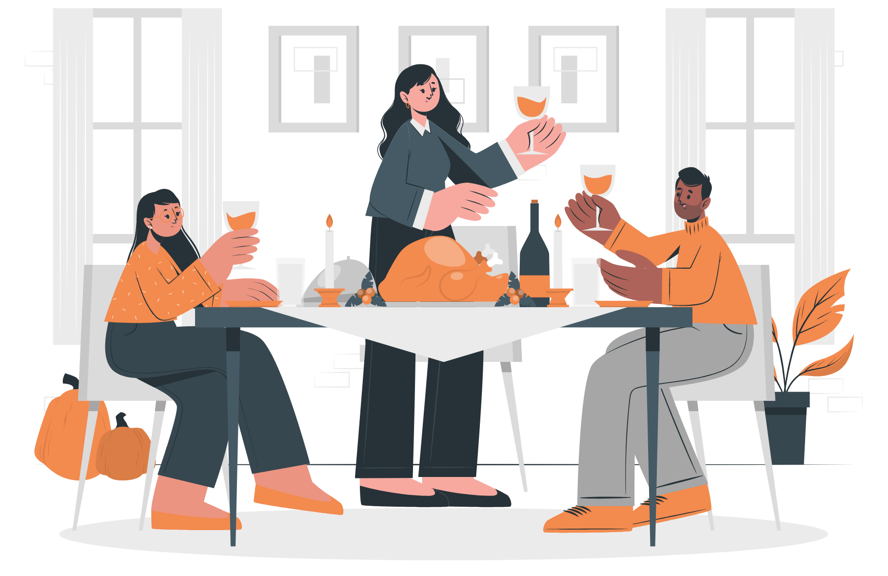
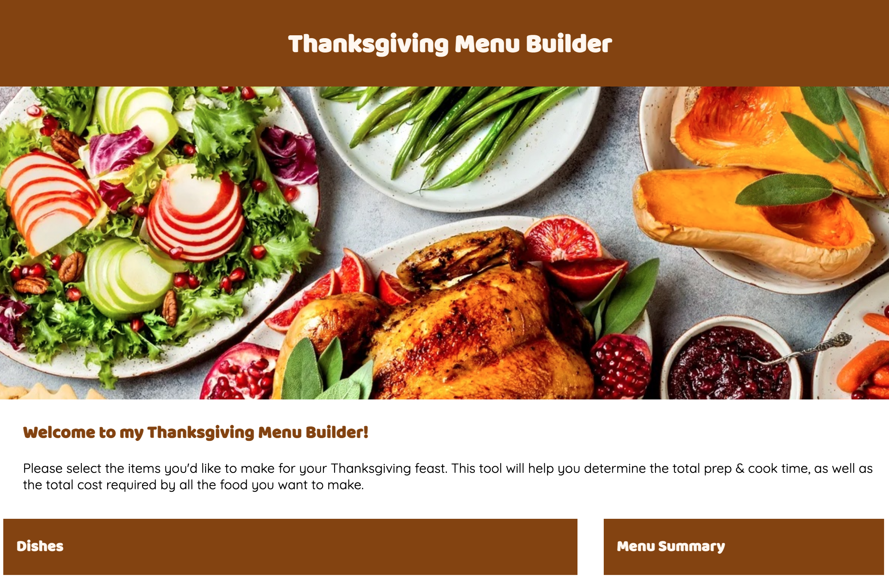

Development
Using React to Develop a Thanksgiving Menu Builder
Introduction
About the Project
The goal of this project was to build an interactive, list-based interface using React, an
open-source front-end JavaScript library for building user interfaces based on UI components. In
order to do this, I had to learn how to implement multiple interface components, as well as to tie
these components to internal data states.
Features of my application include:
- 4 filtering categories based on the type of dish an item is (Soup, Side, Main, Dessert)
- An aggregator section that summarizes the dishes in the menu, including the names, quantities,
unit costs, and total quantities.
- 12 item cards, each displaying:
- Item image
- Its dish category
- Properties I aggregate & sort by
- Button that add to/remove from the aggregator
Final React application:

Goal and Value of My Application
My application is a tool for building a Thanksgiving feast. It helps users calculate the total
preparation & cook time, as well as the total cost required by all the food they want to make. Thus,
this application can aid users plan ahead in a stressful feat of hosting a Thanksgiving meal.
Usability Principles Considered
Learnability: How easy is it for users to accomplish basic tasks the first time they encounter the
design?
I decided to display a large header, image, and short welcome message when users first open the
page. These serve to communicate the purpose of this tool in a concise and visually pleasant way. I also made
sure to label all my buttons in an informative way, so that their function is clear. For
example:
-
"Add to Menu" adds a dish to the menu, "+" increments and "-" decrements the unit counts in both
the Dishes and Menu Summary sections).
-
"Show" indicates filters are additive (Union) rather than finding the intersecton (N). Their
change in color upon clicking indicates whether they're on or off.
-
"Sort by" is a dropdown menu that allows users to select a sort type for the dishes displayed.
Ascending and descending sorting is available for all the 3 numeric properties each dish has
(Cost, Prep Time, Cook Time).
Efficiency: Once users have learned the design, how quickly can they perform tasks?
Below the welcome section, I created a Dishes browser section and a Menu Summary section, which take
up 2/3 and 1/3 of the page respective on large screens. This allows users to both browse their
options for meals to cook see the summary of their chosen menu items, including how many units
they've added and the total cost, prep time, and cook time they require.
Errors: How many errors do users make, how severe are these errors, and how easily can they recover from
the errors?
By adding the "+" and "-" buttons in both the individual dish cards and the summary section, I allow
users to easily change the number of items they added to their menu in case they're experimenting
with
different combinations or added too few/many units of a dish.
Project Takeaways
This project definetely pushed me to think about data structures and app development in new ways. It was my first interactive front-end development project (before I've only used HTML/CSS), and I found the learning curve for understanding the key features of React, such as components and state variables, and how they interact with each other quite steep. Still, I am pretty happy with how my application turned out, and I am excited to further improve my development skills with future projects.